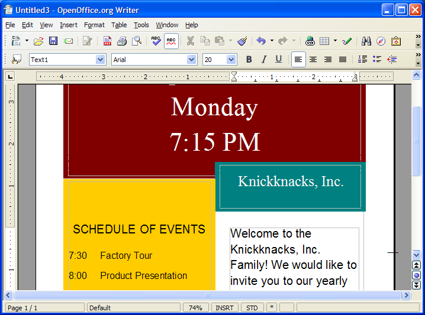
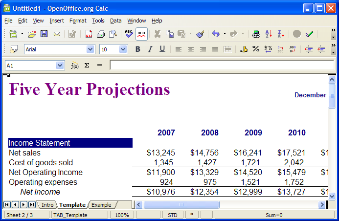

Comprehensive office software
| LibreOffice 4.4.3 Comprehensive office software |
LibreOffice is a full-featured productivity suite including a word processor, spreadsheet, web page editor and presentation program. Documents are stored in a compressed, open-standard XML format to ensure future availability of your data and to reduce file sizes. You can read and write documents in a wide range of formats including Microsoft Office. The word processor component, Writer, is suitable for the production of professional documents, reports, newsletters, and brochures. A powerful spreadsheet module called Calc contains sophisticated tools for calculation, data analysis and visualisation, its built-in charting tools are able to generate customisable 2D and 3D charts. The presentation utility, Impress, uses effects, animation and drawing tools to help you create effective multimedia slide shows to present your the way you want to. Use the Draw component to produce either simple diagrams or complex 3D illustrations and special effects for use in documents and presentations. The database tool, Base, give you all the tools you need for day to day database work in a simple spreadsheet-like form. Due to the high cost of commercial office suites, deciding to use LibreOffice will typically represent the single largest source of savings on software for organisations or individuals. LibreOffice is increasingly becoming an office suite of choice in education, government, and business. The LibreOffice website contains tutorials, manuals and many other tools to help you create professional documents. |
  |
{kind=link}
{kind=link}